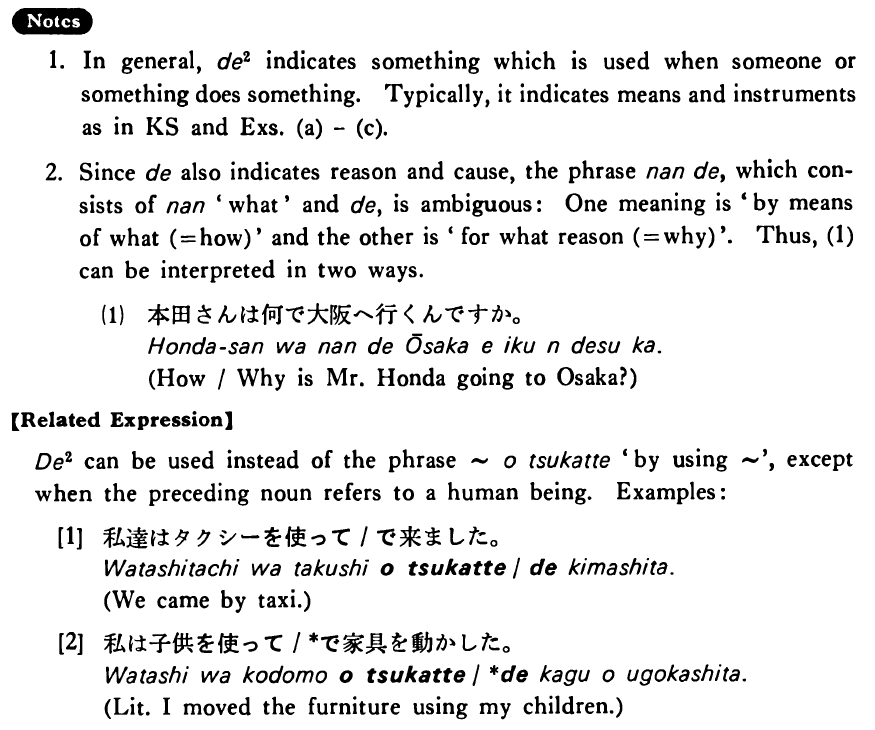

で (2) (B. 106)
- (ks).
- 宮本さんは毎日バスで会社へ行く・行きます。
- Mr. Miyamoto goes to his company by bus everyday.
- (a).
- 日本人は箸でご飯を食べる。
- Japanese people eat rice with chopsticks.
- (b).
- 私達は日本語で話した。
- We talked in Japanese.
- (c).
- 私はその映画をテレビで見ました。
- I saw the movie on TV.
- (d).
- 豆腐は大豆で作ります。
- We make toufu from soybeans.
- (e).
- ラリーはこの椅子を十ドルで買った。
- Larry bought this chair for ten dollars.
- (f).
- ベッツィーはそのレポートを一日で書いたそうだ。
- I heard that Betsy wrote the report in one day.
